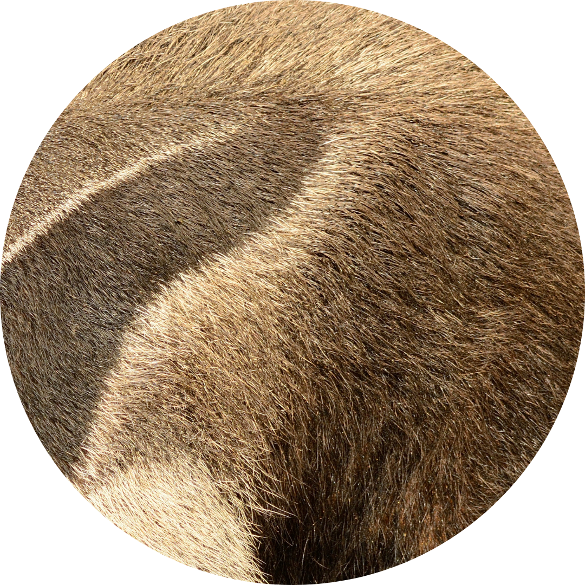
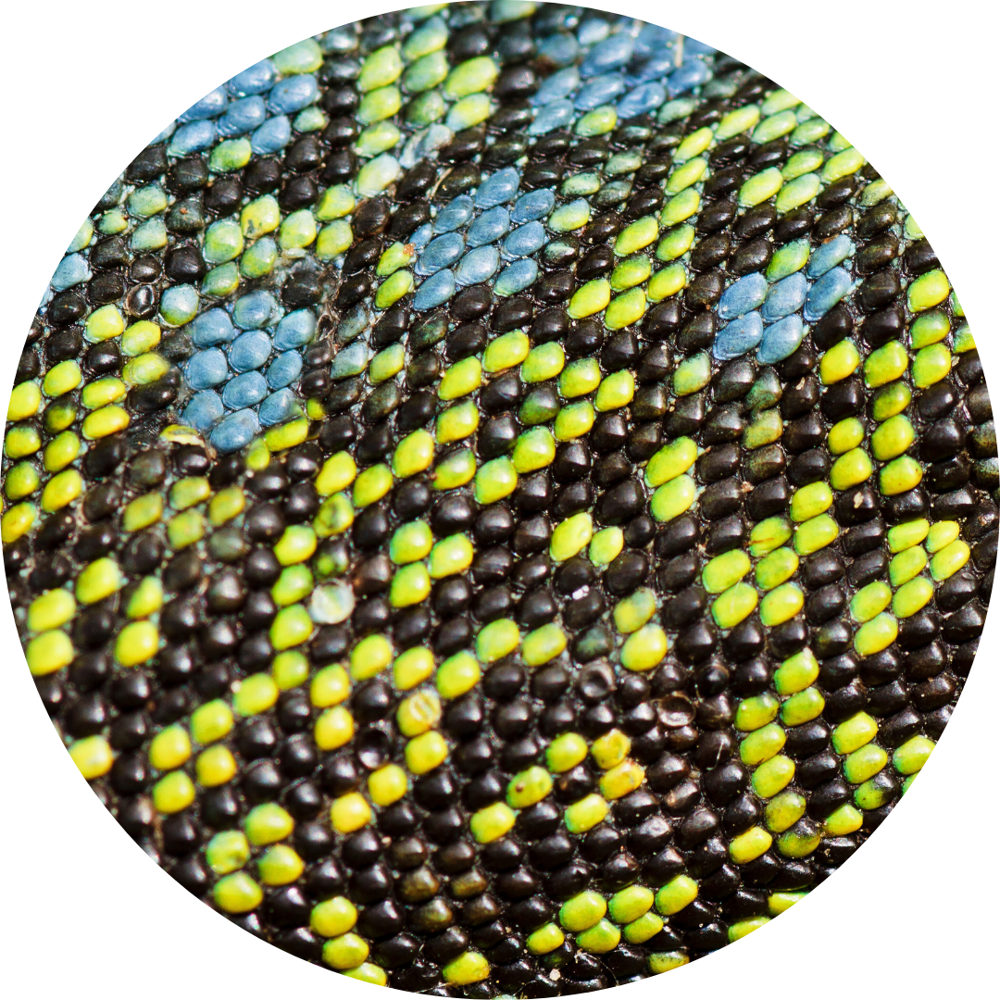
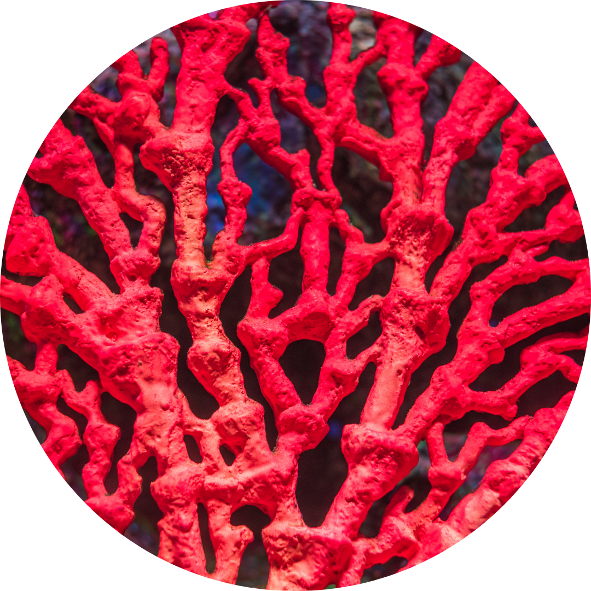
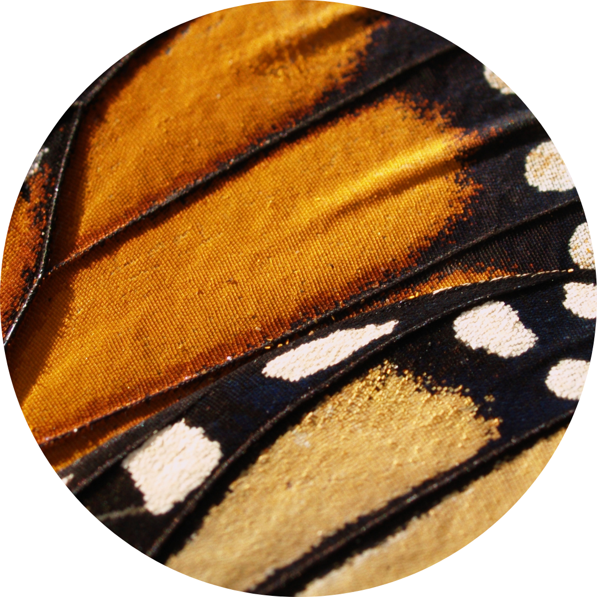
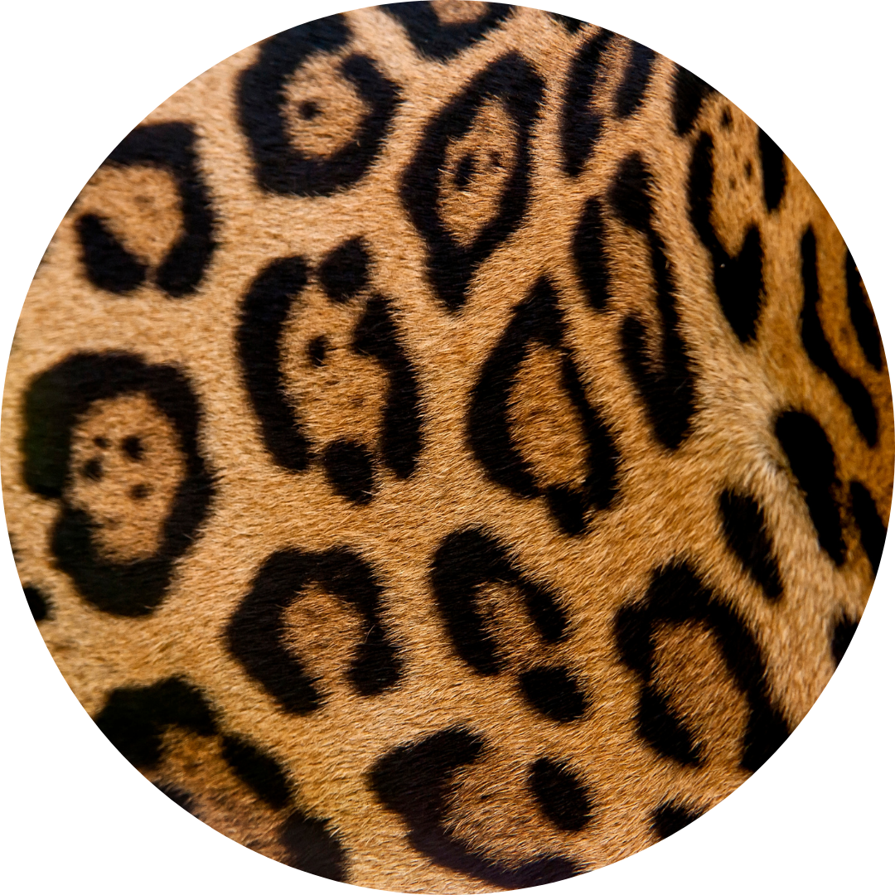
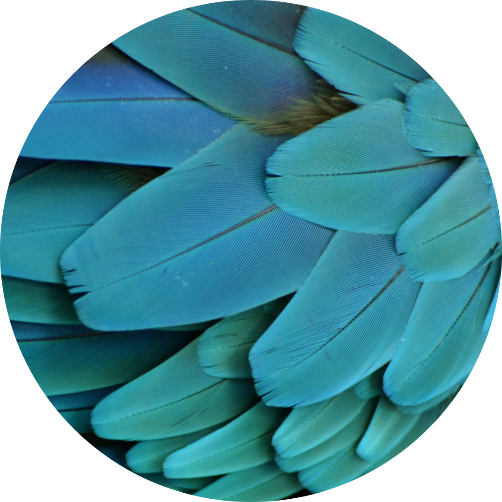

Comitês
Grupos técnicos que fortalecem a cooperação entre os associados
Conhecimento a serviço da conservação
Os Comitês da AZAB são formados por profissionais qualificados e através de sua colaboração a entidade proporciona troca de experiências e cooperação entre seus associados.

Certificação
Conduz os processos de auditoria e certificação em bem-estar animal dos associados.
Saiba mais
Comunicação
Fortalece a presença institucional da AZAB e de seus associados nos canais digitais.
Saiba mais
Aquários
Representa e integra os aquários brasileiros no cenário nacional e internacional.
Saiba mais
Educação Ambiental
Planeja e promove campanhas e projetos de educação para a conservação.
Saiba mais
Bem-Estar Animal
Inspira e incentiva padrões de excelência em bem-estar animal.
Saiba mais
Nutrição
Promove a nutrição como componente essencial para a conservação das espécies.
Saiba maisFaça parte dessa comunidade
Associados efetivos podem integrar os comitês e departamentos da AZAB.